Last Week’s Work Review#
- do not restrict what people annotate, do not limit the vocabulary… we can use modern BERT model to interpret natural language utterances.
- before we dive into the conversion from natural language utterances into logical forms, we can try to use general NLP models to give a end to end trial first…
You need password to access to the content, go to Slack *#phdsukai to find more.
Part of this article is encrypted with password:
[TOC]
TODO List#
-
check NetHack guidebook (wait, does it support multilingual )
- German version guidebook http://www.netzhack.de/handbuch.html
- Chinese version guidebook https://github.com/w4ngzhen/NetHack_GuideBook_CN
- Japanese version guidebook https://jnethack.github.io/jguidebook/jguidebook.360.html
-
check other works on NetHack
- there are no papers using NetHack yet…. (maybe it’s too new)
-
check One-Shot Learning of PDDL Models from Natural Language Process Manuals paper
- check LOCM2 paper -> automatically generate PDDL model from actions traces and plans
- check EASDRL paper -> RL model that can extract meaningful action sequence from sentences
Some thoughts about learning of PDDL models from NLP manuals#
the model they proposed has two phases
phase 1, extract action sequences from text manuals using EASDRL method (a deep learning supervised learning method)
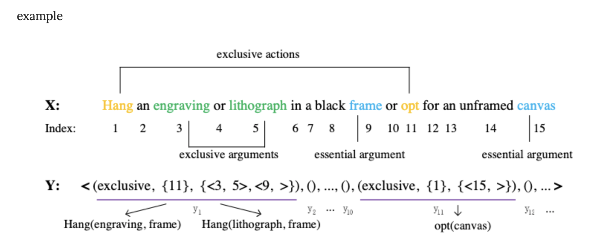
input: manuals
output: action_function(action_arguments)
phase 2, after we get action sequences, the model use LOCM2 method to convert from action sequences to PDDL model
It’s hard to understand LOCM1 and 2 methods…
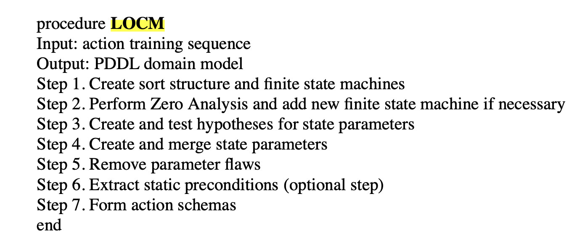
check LOCM2 paper review
Possible limitations#
NetHack guidebook contains more than just action guidelines.
It contains a lot info about game mechanics…
Since the method focuses on just the actions sequences, it may neglect other important information such as player status
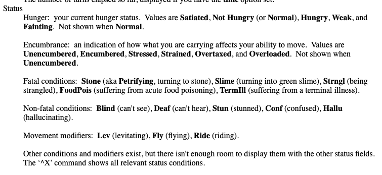
Possible improvement: word association to extract action arguments#
in phase 1, the model is trained by supervised learning and output action and action arguments by inputing texts.
e.g.,
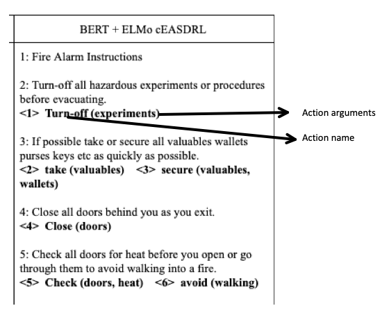
I think thinking if we can use Chunhua’s word association method to increase the accuracy of obtaining action arguments based on action name.
Some thoughts about “Can Wikipedia help Offline RL” paper#
The author claimed that in recent works, offline reinforcement learning has been seen as analogous to sequence modelling
definition of offline RL
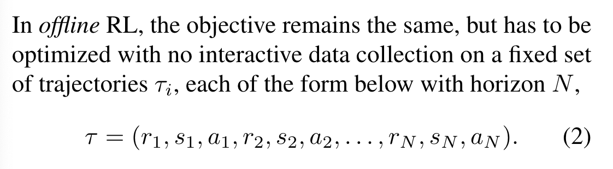
and then here comes a work that introduced Decision Transformer which uses transformer architecture to solve RL problems
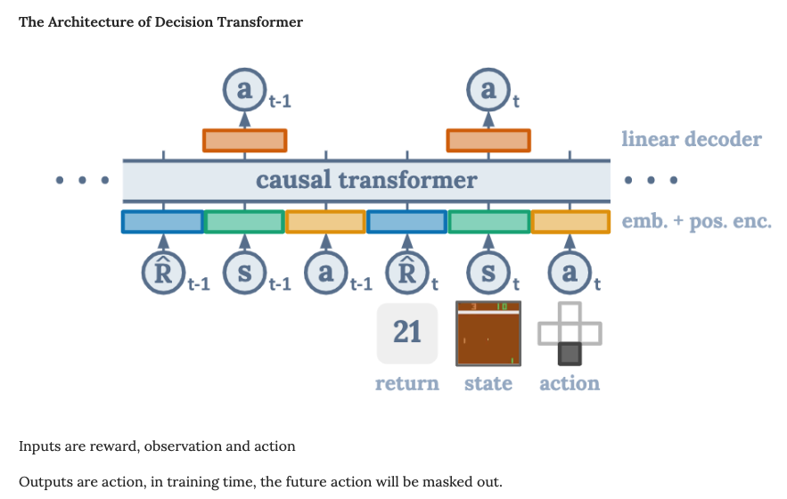
In this paper, the author found out that they can speed up the training with the help of pre-trained language model
How:
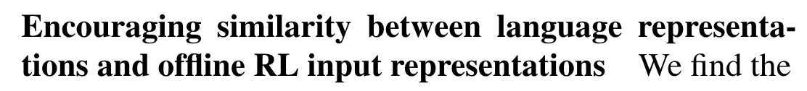
I think this also means that they want the vector representation of language (word embeddings) and the vector representation of RL inputs (rewards, states and actions) to stay at the same semantic latent space. (some kinds of multi-modal stuffs)
How to achieve this: in addition to traditional RL objective, they tried to add L_cos that compute the sum of maximum cosine similarity value between RL input embeddings and word embeddings
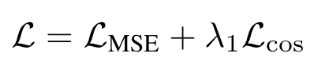
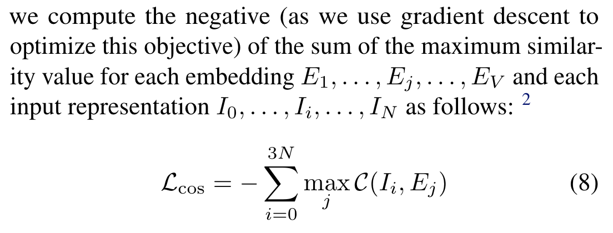
I think this objective essentially means we want to force each RL input embeddings to at least match with one word embeddings. And I am curious if we can find alternative way to encourage RL input embedding and word embeddings stay in the same semantic latent space
Good thing about this work#
This work transfer knowledge from task-independent language model to RL tasks, consequently speed up the training process of Decision Transformer offline RL model.
we can test this method on NetHack and its guidebook… and also Angry birds and their level walkthrough
But since it requires offline RL, we need human player demonstration data first. (Maybe I can collect them from now on)
Possible improvement: we can encourage similarity between RL representation and related sentences embeddings in the task dependent texts.#
e.g., if current action and state is about ask your pet to fight monsters, then the related sentences in the guidebook should be in “fighting” and “your pet” sections
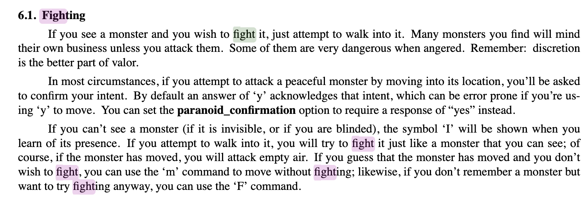
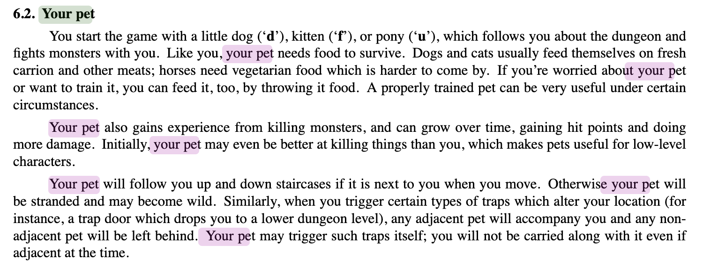
Paper Reading Notes#
-
NLtoPDDL: One-Shot Learning of PDDL Models from Natural Language Process Manuals
- Author: Shivam Miglani et. al.
- Publish Year: 2020
- Review Date: Mar 2022
-
Extracting Action Sequences from Texts Based on Deep Reinforcement Learning
- Author: Wenfeng Feng et. al.
- Publish Year: Mar 2018
- Review Date: Mar 2022
-
Generalised Domain Model Acquisition from Action Traces (LOCM2)
- Author: Stephen Cresswell et. al.
- Publish Year: 2013
- Review Date: Mar 2022
-
Can Wikipedia Help Offline Reinforcement Learning
- Author: Machel Reid et. al.
- Publish Year: Mar 2022
- Review Date: Mar 2022